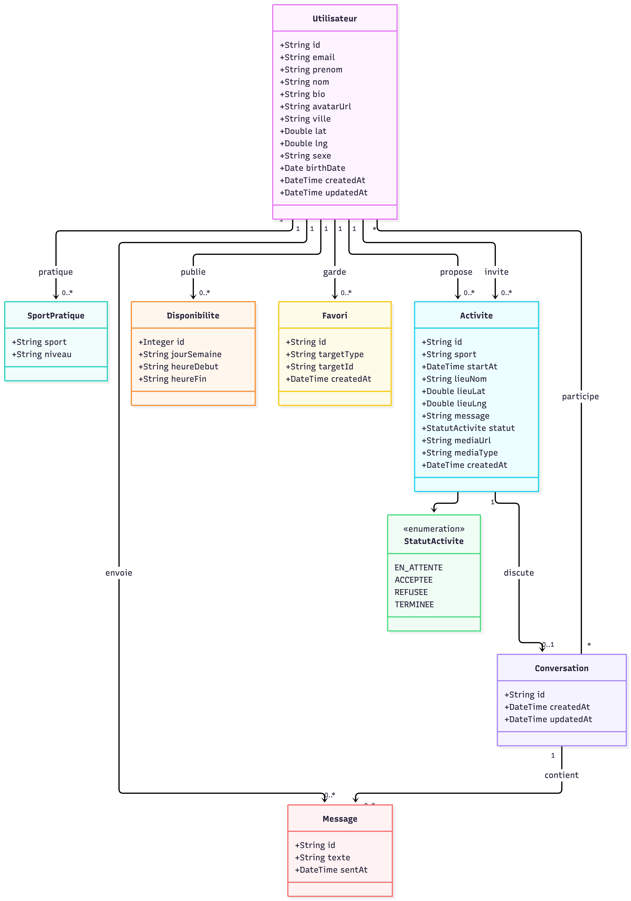

Ce qui est en ligne
FrontVue 3Application mobile-first, testée à 320 px.
DonnéesSupabaseComptes, profils sportifs, messages et géolocalisation.
HébergementVercelDéploiement automatique à chaque push.
Tests15 tests e2eUn test par user story clé du scénario minimal.
Fonctionnalités
Demandes de binômeSHOULD
Planifier une séanceSHOULD
Mes activités et historiqueSHOULD
Séance terminéeSHOULD
Avis après séanceSHOULD
Signaler / bloquerSHOULD
Photo de profilCOULD
Binômes favorisCOULD
NotificationsCOULD
Replanifier avec le même binômeCOULD
Modèle de données

Spécification OpenAPI
Les routes du scénario minimal et du scénario cible.
| Méthode | Route | Rôle | Scénario |
|---|---|---|---|
| POST | /auth/signup | Créer un compte | Minimal |
| POST | /auth/login | Se connecter | Minimal |
| GET | /me | Lire son profil et sa complétion | Minimal |
| PATCH | /me | Modifier prénom, nom, bio, zone, rayon | Minimal |
| PUT | /me/sports | Définir ses sports et niveaux | Minimal |
| PUT | /me/disponibilites | Définir ses disponibilités | Minimal |
| GET | /sports | Lister les sports | Minimal |
| GET | /sportifs?sport&niveau&rayon | Rechercher les sportifs proches, triés par distance | Minimal |
| GET | /sportifs/{id} | Voir un profil | Minimal |
| GET | /conversations | Lister ses conversations | Minimal |
| POST | /conversations | Démarrer une conversation | Minimal |
| POST | /conversations/{id}/messages | Envoyer un message | Minimal |
| POST | /demandes | Envoyer une demande de binôme | Cible |
| PATCH | /demandes/{id} | Accepter ou refuser | Cible |
| POST | /seances | Planifier une séance | Cible |
| GET | /me/seances | Mes activités | Cible |
| POST | /seances/{id}/avis | Noter son binôme | Cible |
| POST | /favoris | Ajouter un favori | Cible |
| DELETE | /favoris/{id} | Retirer un favori | Cible |
| POST | /signalements | Signaler un profil | Cible |